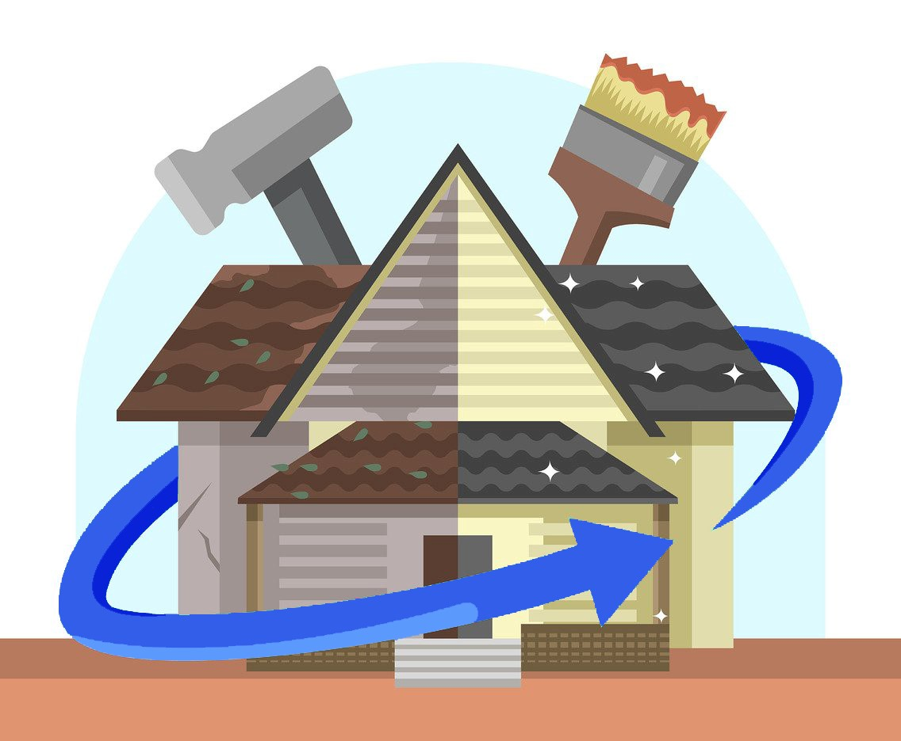

Le Prisme et son histoire.
En 1993, Alain VILO créa la société Le Prisme, ayant pour objet la Rénovation de Bâtiments en Martinique et Guadeloupe.
En 2012, enrichie d’une expérience de terrain, l’Entreprise obtint l’agrément de l’Etat en tant qu’Opérateur Social dans le cadre du dispositif de l’Aide à L’Amélioration de l’Habitat (AAH).
À compter de 2017, le métier du Prisme évolua vers celui d’Assistant à Maitrise d’Ouvrage spécialisé dans le domaine de la Rénovation de l’Habitat.
Notre mission consiste ce jour à accompagner toute personne souhaitant effectuer des travaux dans son logement.